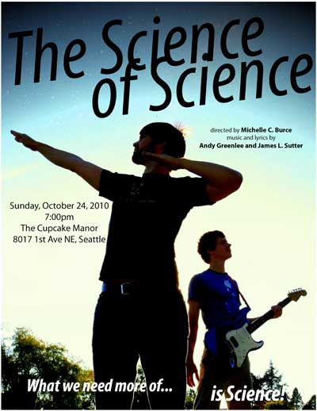

From Hello Earth, the creators of Seattle's underground theater sensation Outdoor Trek, comes a complete reenactment of the original Star Wars film, performed for free in the park every Saturday and Sunday in August. Cast without regard for race, gender, age, or anything but sheer awesomeness, the show is a cornucopia of gorgeous low-budget special effects and hilarious fan homages.
James was honored to play guitar as part of The Power Converters, the band that provided the show's extensive accompaniment.

In 2010, James co-wrote the musical The Science of Science with Andy Greenlee and Michelle Burce, all as a surprise present for a friend. James wrote roughly half the songs, and played the main character of Arya (seen below in the lab coat with the electric guitar). Including cast, crew, and live band, the show took about 20 people a year to write and prepare, all for one night of community theater in front of a packed house.
Click here to watch from the beginning, or jump around to specific songs, such as "Science Will Save Us," "The World Is Going To Hell," "Pernicious Cure," "Bein' Manful," and more.
On April 5th, 2009, James's friends gave him the most amazing surprise 25th birthday party of all time by secretly writing, arranging, rehearsing, and performing a 45-minute musical with a brilliantly impersonated James as the main character, scoring the whole thing with reinterpretations of music he'd written.
Click here to watch the full show on YouTube, or skip around to songs like
"Of Loss."
Part of a contest inspired by Dr. Horrible's Sing-Along Blog, in which up-and-coming supervillains could apply to join the Evil League of Evil. James joins the Batlord of Ganymede in creating an application video for Gentleman Jon, more commonly known as The Senator. (The video earned an honorable mention in the film's credits.)